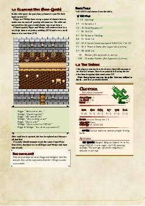
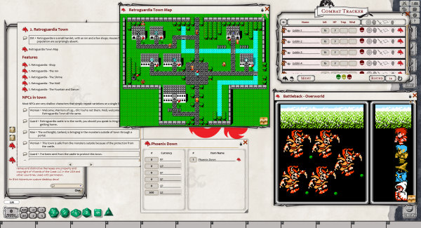

An 8-Bit Adventure
A Short Comedic D&D Module By JiFish
An 8-bit Adventure is a is a short comedy 5e Dungeons & Dragons module, designed for a group around levels 4 - 7. It is supposed to be completed in a single 3 - 4 hour sitting. The players shouldn't find the difficulty very challenging, the fun is in the silliness of the setting. It's designed to be slotted in to an existing campaign as a one-off special adventure.
The adventurers find themselves trapped in a world inspired by JRPG tropes and must find a defeat the evil sorcerer Garland to escape.
An 8-Bit adventure is available as a PDF or a Module for the Fantasy Ground virtual tabletop software.

Featuring
- Multiple locations to explore, including a town and dungeon.
- 8-Bit themed monsters, NPCs and items.
- Pre-Scripted dialog.
- Rules to run simplified combat.
Downloads
Fantasy Grounds Screenshot
Other Games I've created
- Getting Away With Murder - A co-operative role-play game of drama, wit and mystery.
- Heroes and Villains a playset for Fiasco.
- Astro Ball a retro-styled pool-like computer game.
- Zen Island - A chill puzzle, exploration and organisation game.
Contact
If you enjoyed this D&D module, I'd love to hear from you. Send me a tweet @JiFish.
This is a fan creation. It is not intended for any commercial use. See the licence for full details.